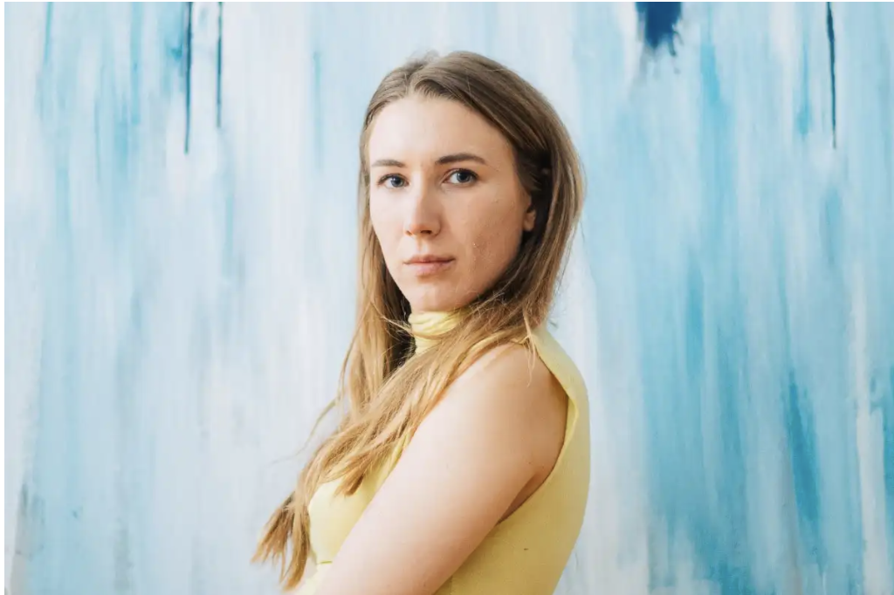
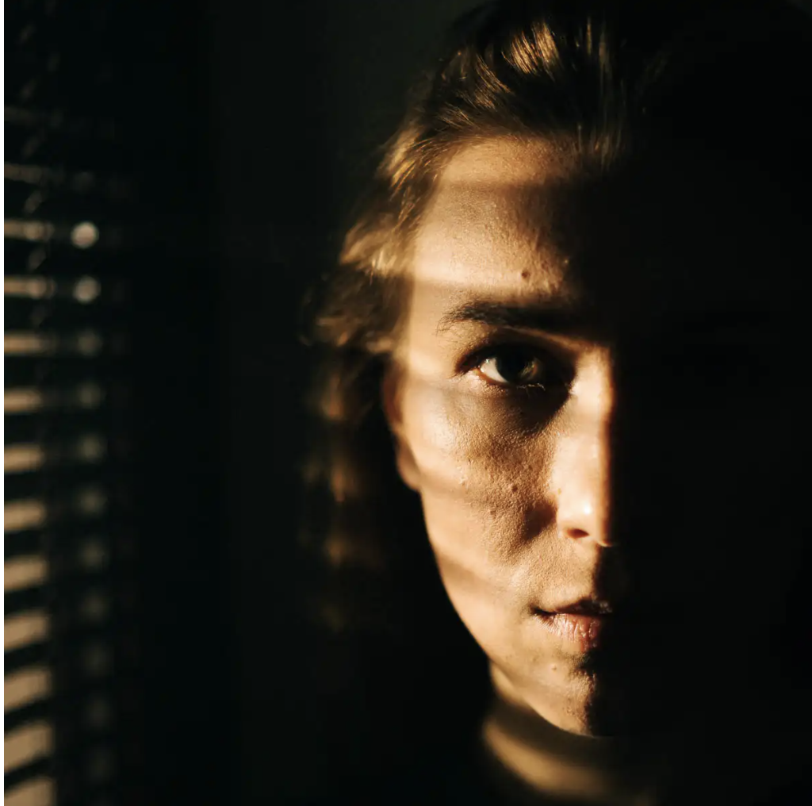
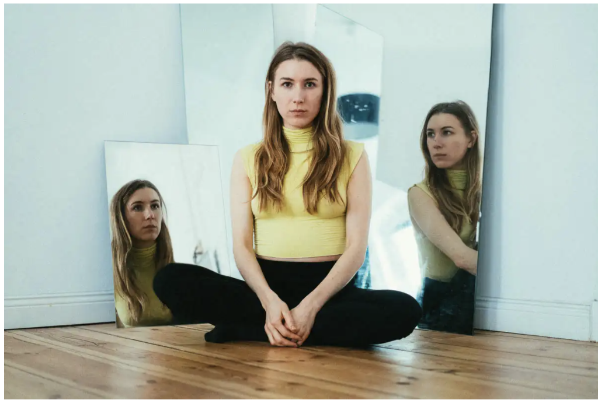

January 6, 2019>
As the first part of our ‘Spotlight’ series we focus on individuals trying to make a name for themselves in the creative industries.>
Sarah A. Wessendorf is a German actress and artist currently based in Berlin. She has caught all the right eyes with her talents ranging from painting to dance and acting. Sarah sat down with us to talk about her career in acting and her latest project the film “When kingfisher catch fire“>
Sarah. picture taken by Greg Rivers.
Hi Sarah Please introduce yourself to our readers in just 3 words or less:
I’d say determined, focused, spiritually conscious.
You have experimented in various art forms from painting to dance, have they had an influence on your acting style and what is special about acting?
Acting is a creative expression that mirrors our daily life. You don’t know who you truly are and just how much we put on a show in our daily lives. Acting is the closest thing to our daily behaviour that we have, it can reveal truths to us in a very personal way. We can empathise and see ourselves in the actors on screen, they move us in a way that paintings for example, often cannot. But I do love every form of expressive art, It just so happens that I focused on acting.
Take us on your acting journey, when and how did you choose to become an actress?
The very first moments that I can remember are on and behind stage in the theatre I played at since I was young. I remember the older girls getting our make up ready, the mirror lights, the smell from the stage. Those were my fondest memories. Also I was heavily influenced by the movie “The Rocky Horror Picture Show“. I just loved the decadence, wildness and freedom. I wanted to be like that. Living out my creative craziness!
If you could describe your way of acting in three ways, what would they be?
I would say honest, deep, authentic. I am mostly interested in portraying honesty. If I catch something real, then my job is done.
What was your most emotional situation whilst acting?
As an actress you have emotional states on a daily basis, because that is what makes your performance great and is what makes the difference. If you can zoom into an emotion and completely embody it then the audience can’t help but relate and find truth in your eyes. But I remember once doing a warm up with another actress and we just sat in front of each other looking into each others eyes. She started laughing, but I kept on looking into her eyes. Eventually she started crying and couldn’t stop. It was very moving to me and very beautiful, to see what a simple connection like that can trigger. Acting is way more than pretending. It is a form of creating contact between fellow actors, exchanging real emotions, living in real memories. At the same time giving the audience the chance to relate and extract relevant information for themselves
Sarah in the dark. picture taken by Greg Rivers.
You have spent a lot of time in Los Angeles, Do you have any Hollywood stories?
Yes I love Los Angeles, it’s such a beautiful and crazy city. I once was invited to a Hollywood type party in Hollywood Hills. I was talking to Alexander Skarsgard who had just finished shooting Tarzan and I think was still shooting Big Little Lies. We had a beautiful conversation about my hometown Hamburg and just how much he loves Berlin. It was quite a typical Hollywood party with a lot of producers around, and a bit boring to be honest. But Alexander was so funny and took the bike that I came with (I was staying very close to there) and just yelled “biker coming through!“ whilst carrying my bike through the crowd. I had to laugh! It was so refreshing to have someone not take everything so serious and lighten the mood. He is a great and funny guy!
Let’s talk about your latest project ‘When Kingfisher Catch Fire’, can you give us a short summary and any insight into the behind the scenes process? Also when can we expect to see the film?
“When kingfisher catch fire“ is a film that follows several unique individuals in Berlin. It portrays characters that seem quite stereotypical for this city; Transgender people, homosexuals and people who live a very different life style than most. I play a buttoned up journalist who comes from the outside to interview these people and whilst doing so experiences her own crazier side, slowly letting go of the things that were holding her back. It is always exciting to work with people who have a true authenticity. It was a pleasure also working alongside Lothar Lambert, a director I respect deeply. A funny inside story is that for one scene I need to be dancing to “Hey Big Spender“ in a rather showing outfit. I had specific choreography but the stage was super small and round and I am partly on a chair as well. There was sparkling wine offered, probably also to help me relax. I somehow didn’t realize that I had nearly finished 4 glasses on an empty stomach. So I danced with all I had to give but somehow the chair missed the stage and with a huge bang I just fell off the stage sideways. Everyone was in shock, open mouth. But it took me around a second to jump up, dance my way up on stage and finish the routine. I think I still have a bit of pain in my wrist from that but.. yeah professionalism! The film is being submitted to several film festivals and will be out later this year!
Sarah and mirrors. Picture taken by Greg Rivers
Do you have any advice for anyone considering acting as a career, and what do you think are the most important traits you need to survive in this business?
I think the most important trait to survive in life in general is doing what you love, without any inhibitions. You might be fine doing something else, but that’s not the life you came here for. You came for passion, you came for joy and you came for excitement. Then you just need the strength, the trust and the endurance to go for it and to know that this is what you are supposed to be doing. And you will get there.